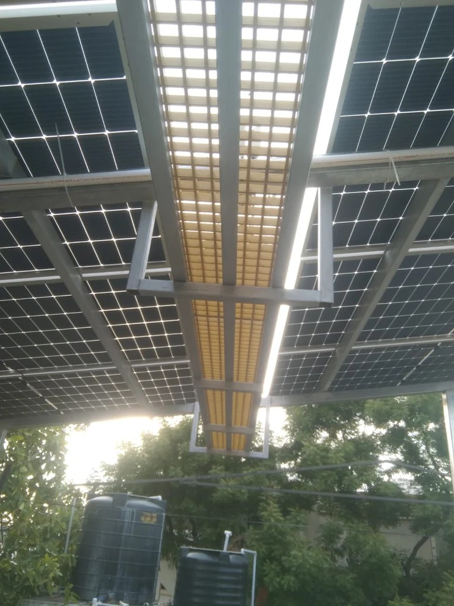

01
Shadow hours
We record which part of the terrace is clear from late morning through the hot hours. The shaded strip is left empty.
Velachery houses and apartment terraces
Velachery is inland, a short ride from our Madipakkam office. The roof is usually flat, hemmed in by a taller block, and one corner holds water after a hard rain. We size the rows to that roof. The visit is free, and you can stop after it.

What changes the count
Vijayanagar and the older colonies are mostly independent houses, so the owner can decide. Along 100 Feet Road and Velachery Main Road the home is often a flat, and the terrace belongs to the whole block. A neighbouring tower can take the sun for part of the day. We mark those hours, then count modules only on the strip that stays clear. After a heavy shower, some flat roofs keep a shallow pool where the slope dies. Rows stay off that patch, and the frame is lifted so rain can run underneath.
Module choice for the wider city is on panels for a Chennai home. Salt on the hardware is a coastal problem. Here the checks are a neighbour tower, standing rainwater, and whether your household may use the terrace.
Tower shade markedRain kept movingShort trip from MadipakkamWritten on the visit
We record which part of the terrace is clear from late morning through the hot hours. The shaded strip is left empty.
The low spot that pools after rain stays clear of rails. Raising the frame lets water pass. It does not waterproof the slab.
The overhead tank keeps working. A gap between rows is a walkway, so washing and the tank lid do not mean stepping on glass.
Central assistance needs cells and modules made in India. Eligible homes can receive up to ₹78,000. The amount follows the scheme rules on the day you apply.
Who can proceed
An independent house in Vijayanagar can usually go ahead once the clear patch is measured. A flat on 100 Feet Road or Velachery Main Road proceeds only after the association has allowed that household to use the roof, in writing. A balcony is not a mounting place, however high the floor.
How the raised frame is fixed is covered on solar panel installation. Modules you already hold are fitted as labour, and that scope is on installation services. Reading the quote, including the subsidy gap, is on panel and price. NDCR against DCR is in that guide before a cheaper import is confirmed.
Local questions
Yes. It is a short trip. The visit is free, and you can stop afterwards. A recent bill and a terrace photo are enough to begin.
Often a smaller plant on the clear hours is the right size. We do not put modules on the strip the tower covers. If that clear patch is too small to be useful, we say so.
Rows stay off the corner that pools, and the frame is raised so water can pass. The visit does not replace waterproofing the slab.
Yes, for central assistance of up to ₹78,000. Cells and modules must be made in India, and the amount follows the scheme then in force. NDCR is only if that subsidy has already been given up.
A free visit from Madipakkam. We note shade hours, the wet corner, and whether the plant should be DCR.
Request your free quote →